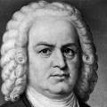
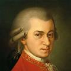
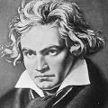
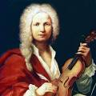
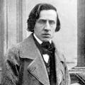
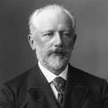
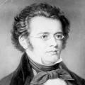
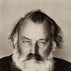

Wolfgang Amadeus Mozart
Johann Sebastian Bach
Antonio Vivaldi
Frédéric Chopin
Piotr Ilich Chaikovski
Franz Schubert
Johannes Brahms
Claude Debussy
La música clásica es un género amplio de música artística que se desarrolló principalmente en Europa, desde la Edad Media hasta la actualidad. Es una de las formas musicales más complejas y ricas de la historia, y ha influido profundamente en todos los demás géneros musicales.
origen y evolucion historica
edad media: 500-1400
Música vocal religiosa (como el canto gregoriano). Uso limitado de instrumentos.
- Compositores: Hildegarda de Bingen, Guillaume de Machaut.
Renacimiento: 1400-1600
Mayor complejidad y armonía. Se desarrollan la polifonía y la música secular.
-Compositores: Josquin des Prez, Palestrina.
Barroco: 1600-1750
Surge la ópera, el concierto y la sonata. Uso del bajo continuo. Gran expresividad.
- Compositores: Johann Sebastian Bach, Antonio Vivaldi, George Frideric Handel.
clasismo: 1750-1820
Equilibrio, claridad y simetría. Nacen la sinfonía y la sonata clásica.
- Compositores: Wolfgang Amadeus Mozart, Joseph Haydn, Ludwig van Beethoven (fase temprana).
Romanticismo: 1820-1900
Énfasis en la emoción, el drama y la individualidad. Obras más largas y expresivas.
-Compositores: Frédéric Chopin, Franz Liszt, Johannes Brahms, Pyotr Tchaikovsky.
Siglo XX y comtemporaneo: 1900-Presente
Exploración de nuevas formas, disonancias y técnicas. Incluye atonalidad, minimalismo, neoclasicismo, etc.
-Compositores: Igor Stravinsky, Arnold Schoenberg, Philip Glass, John Cage.
Partitura Escrita:Es música planificada, muchas veces compleja, que se escribe y estudia para su interpretación.
Instrumentación orquestal:Usa una gran variedad de instrumentos, especialmente los de la orquesta (cuerdas, viento, metales y percusión).
Forma y estructura:Se usan formas musicales como sonata, sinfonía, fuga, concierto, ópera, etc.
Profundidad emocional y técnica: Se enfoca tanto en la expresión artística como en la perfección técnica.
La música clásica ha ejercido una profunda influencia en el desarrollo de la cultura, el arte y otros géneros musicales a lo largo de la historia. Más que un estilo musical, representa una tradición artística compleja que ha moldeado la manera en que entendemos y producimos música en el mundo occidental.
Uno de los mayores aportes de la música clásica es el desarrollo del lenguaje musical formal, incluyendo conceptos como armonía, contrapunto, forma y orquestación. Estas bases teóricas han servido como cimiento para la música popular, el jazz, el cine, los videojuegos y otros géneros contemporáneos. Artistas de rock, pop y música electrónica han tomado elementos del repertorio clásico para crear nuevas obras, y muchos músicos actuales han sido formados con educación clásica.
En el ámbito educativo, esta música ha sido clave para el desarrollo de la disciplina, la creatividad y el pensamiento abstracto. Aprender música clásica no solo permite apreciar una de las más altas expresiones del arte humano, sino que también mejora habilidades cognitivas, emocionales y sociales.
Finalmente, la música clásica ha inspirado movimientos culturales, filosóficos y políticos. Obras como la Novena Sinfonía de Beethoven o los corales de Bach han sido símbolos de libertad, fe y unidad, traspasando las barreras del tiempo y del idioma.